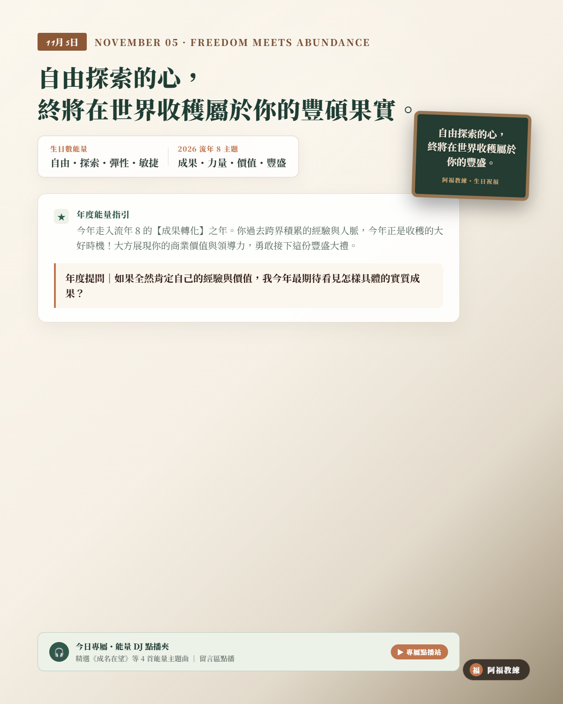

NOVEMBER 05 · FREEDOM MEETS ABUNDANCE
11/05 壽星
生日快樂
「自由探索的心，終將在世界收穫屬於你的豐碩果實。」
生日數 5（自由・探索・彈性・敏捷）
2026 流年 8（成果・力量・價值・豐盛）
生日數能量：自由・探索・彈性・敏捷
流年 8 主題：成果・力量・價值・豐盛
A YEAR OF SPECIAL MASTERY
將跨界才華化為商業成果，大方收下世界的豐盛大禮
今年走入流年 8 的【成果轉化】之年。你過去跨界嘗試、多元累積的廣大人脈與經驗，今年正是全面收穫的大好時機！不要害怕承擔責任與展現權力，唯有掌握實質資源，你才能享有更高等級的自由。大方肯定自己的商業價值，拿出領導魄力，親手為自己的人生代表作拍板定案，豐碩的果實正等著你接下！
年度提問｜「如果全然肯定自己的經驗與價值，我今年最期待看見怎樣具體的實質成果？」
YOUR ENERGY DJ · 5 號人的流年 8 能量點播站
當隨性敏銳的 5 號人，走進強者收穫的流年 8
身為天生熱愛自由、討厭被束縛的 5 號人，你習慣隨興探索、見好就收；然而今年走入「流年 8」的成果考驗年，宇宙要給你的課題不是繼續漂泊，而是「實力顯化與成果定錨」。當不喜被管制的你，遇上講求數字、績效與長期責任的年份，容易出現想逃避或低估自己身價的盲點。今天 DJ 特別為 5 號人的你精選流年 8 豐盛歌單——為你的敏捷換上霸氣戰袍，勇敢拿下屬於你的江山！
LIFE NUMBER 8 · CLASSROOM PLAYLIST
8 號人課堂激勵與歡唱歌單（給 5 號人的流年 8 豐盛歌單）
這份歌單來自阿福教練生命靈數課堂中，專為「實力展現、商業突破、團隊領導與成果顯化」所調配的經典曲目。天生反應靈活的 5 號壽星，在進入流年 8 的豐收考場時，聽這 8 首歌，就像為敏捷的心注入王者霸氣——把靈感變現為實力，拿下屬於你的豐碩江山！
- 01成名在望五月天｜願景開場・以企圖心與投入開場，深入討論想打造的影響力與代表作（YouTube 搜尋）
- 02龍拳周杰倫｜氣勢帶動・強烈節奏激發行動霸氣，建立突破困難的團隊士氣（YouTube 搜尋）
- 03向前走林強｜行動推進・果決堅毅的前進魄力，鼓勵持續開拓與大膽進取（YouTube 搜尋）
- 04三天三夜張惠妹｜團隊能量・高峰能量互動，激發 5 號人主導全場的號召力與魅力（YouTube 搜尋）
- 05當動力火車｜不怕挑戰・把挫折與壓力轉化為堅定耐力，勇往直前拿下勝利（YouTube 搜尋）
- 06大藝術家蔡依林｜自我要求・引導追求極致卓越的專業精神，專注自我超越（YouTube 搜尋）
- 07頑固五月天｜長期投入・讓企圖心扎根在日復一日的自律努力，成就偉大代表作（YouTube 搜尋）
- 08明天會更好群星｜誠信收束・以利他共榮提醒：真正的成功是帶領身邊人一起富足成長（YouTube 搜尋）
歌單依《生命靈數8號人_激勵九首與歡唱點播歌單》整理。點播連結均為 YouTube 官方影音搜尋結果；播放時請依授課場地與著作權規範使用。
願你的善良與熱情被世界深度珍視，在自我實現中收穫繁榮與自信底氣。
👉 11/05 壽星快來留言【👑】！為新的一歲許下最棒的願望！
#11月5日生日快樂 #生命靈數 #生日數5 #流年8 #阿福教練